Сага о видящих
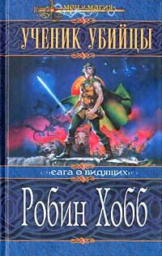
Ученик убийцы
Действие романа разворачивается в вымышленной стране Шесть Герцогств. Главный герой произведения «Ученик убийцы» – незаконнорожденный сын принца по имени Фитц. Вместе со стариком Чейдом, который обучает его тайному искусству, они стараются защитить свою страну от набегов пиратов. Главный герой выступает не только в качестве разведчика и исполнителя пикантных поручений, но и живет простой жизнью подростка.

Королевский убийца
В произведении «Королевский убийца» – история о незаконнорожденном наследнике принца – Фитце Чивеле. Вместе со своим другом волком, которого он сам воспитал с детства, они ведут борьбу против Скованных. Но под давлением власти и людских интриг Фитц превращается из преследователя в преследуемого, что вынуждает его пойти на самые крайние меры.
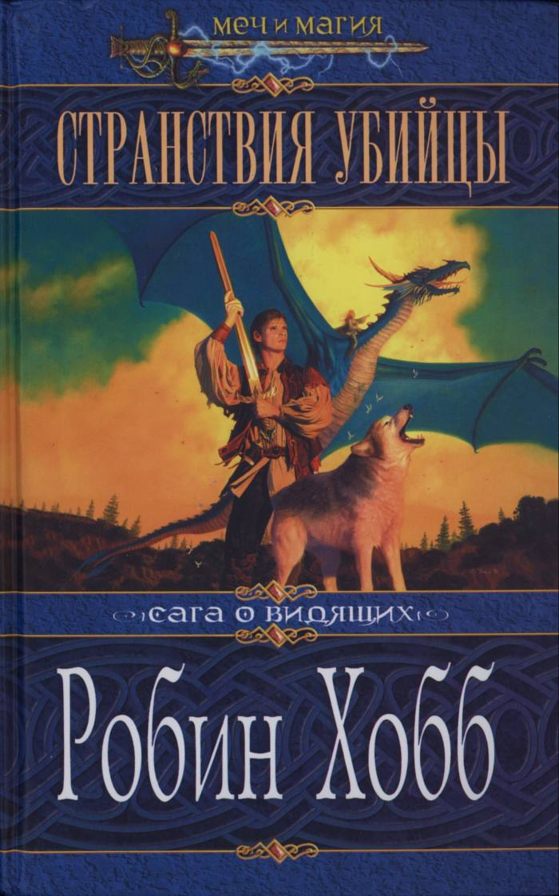
Странствия убийцы
Главный герой произведения «Странствия убийцы» вновь получает право на жизнь. И он не намерен тратить время зря, ведь впереди его ждут две главные цели. Во-первых, Регал должен понести наказание за предательство, которое возвело его на пьедестал власти в Шести Герцогствах. Во-вторых, необходимо найти Верити, который и был законным наследником престола. И для реализации этих задач Фитцу придется пуститься в долгое путешествие, пунктом назначения которого является Горное Королевство.
Сага о живых кораблях
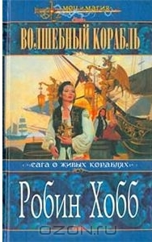
Волшебный корабль
Действие романа происходит в южной части выдуманного писательницей мира, в котором кроме пиратов, богатых жителей Дождевых Чащоб со странной измененной внешностью и говорящих змей существуют живые корабли.
«Проказница» - живой корабль семьи Вестритов, морских торговцев города Удачный. Корабль только что ожил, но по стечению обстоятельств его капитаном стал зять Ефрона Вестрита - главы семейства. Чужой для «Проказницы» человек превратил живой корабль в судно для перевозки рабов.
Альтия, дочь Ефрона, мечтает вернуть корабли себе и берется за любую работу, чтобы достичь заветной цели. Но пока кораблем завладел пират Кеннит, борющийся с рабством своим способом. Деятельность каждого их них развернется далее на страницах романа «Безумный корабль» (англ. Mad Ship).
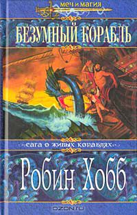
Безумный корабль
Алтия, наконец, вернулась в Удачный, но ее фамильного живого корабля «Проказницы» там не было. Позже ее семья и сама Алтия узнают о печальной участи корабля и ее команды. Девушка и ее друзья пытаются выкупить, восстановить, а главное, уговорить прикованный на суше живой корабль «Совершенный» выйти в море, чтобы он помог им вернуть «Проказницу».
Тем временем сама «Проказница» пока остается весьма довольной командованием пиратского капитана Кеннита, который продолжает гоняться за рабовладельческими судами, уничтожая их команды и освобождая рабов.
Третий роман цикла «Корабль судьбы» (англ. Ship of Destiny) расскажет о выходе «Совершенного» в море и о многом другом.
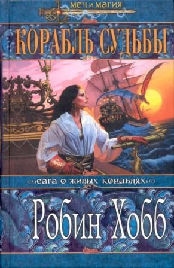
Корабль судьбы
Книга раскрывает связь живых кораблей с морскими змеями и драконами - Повелителями Трех Стихий. Драконица Тинталья освобождается из заточения и вынуждена принимать помощь обычных людей, не найдя Старших.
Альтия и Брэшен на все еще безумном корабле «Совершенный» находят «Проказницу», превращенную пиратом Кеннитом в «Молнию». И это не единственное изменение. На многих героях последующие события отпечатались не только в душе, но и на внешности. И все-таки живым кораблям удалось вспомнить, кто они на самом деле, и изменить мир к лучшему.
Сага о шуте и убийце
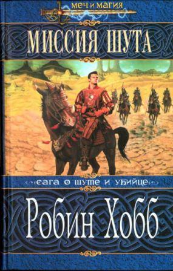
Миссия Шута
Робин Хобб вновь рассказывает о событиях жизни Фитца – королевского убийцы, который известен по другим произведениям автора. Несмотря на то, что он отошел от дел и спокойно живет недалеко от города Кузница, его не забыли.
Однажды на пороге дома главного героя книги «Миссия шута» появляется Чейд – его старый учитель. Он просит Фитца помочь обучить юного принца навыкам владения Скиллом. Затем к нему приходит его давний друг, но и на его уговоры вернуться к прежней жизни он не поддается. Изменить решение его заставило ужасное событие – исчезновение принца. Его помолвка оказалась под угрозой срыва, а вместе с ней и союз, на который возлагаются большие надежды.
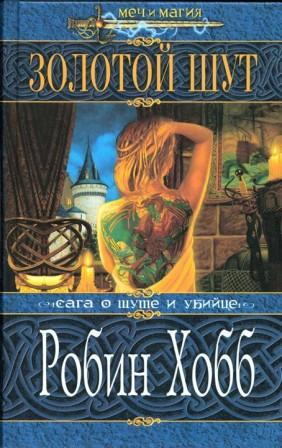
Золотой Шут
Читатель окажется на территории Шести Герцогств, спокойная жизнь которых вновь висит на волоске. Помолвка наследного принца под угрозой благодаря стараниям мятежников-Полукровок.
Страна вот-вот «взорвется» от бунтов. Из Бингтауна прибыли послы с просьбой оказать содействие в войне с Чалседом. А над принцем нависла угроза разоблачения тайны королевского дома. На фоне всех этих событий помощь человека, владеющего магией Видящих, просто неоценима. Кто-то должен подготовить отряд бравых солдат, которые смогут оказать поддержку наследнику. И сделать это может только Фитц – главный герой книги «Золотой Шут».
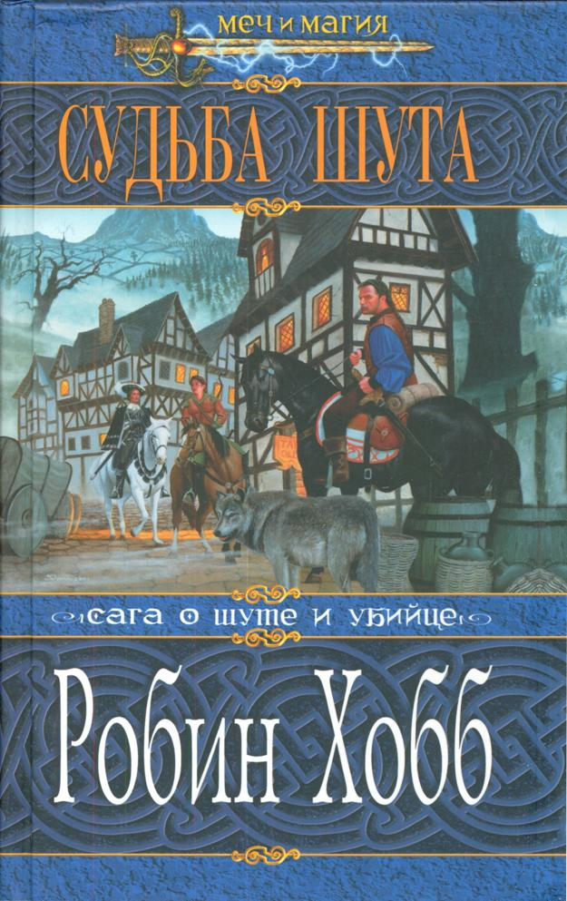
Судьба Шута
В центре событий – всем известный Фитц Чивэл, в руках которого оказывается судьба целого мира.
Читатель перенесется на Аслевджал. Это место выбрано не случайно. Оно может стать могилой для Белого Пророка, ведь он сам предсказал собственную смерть. Здесь решится исход сотрудничества Внешних островов и Шести Герцогств. Смогут ли они найти компромисс, или же союз обречен на неудачу? Именно здесь решится вопрос между людьми и драконами. И эта миссия отводится главному герою произведения «Судьба Шута».
Хроники Дождевых Чащоб
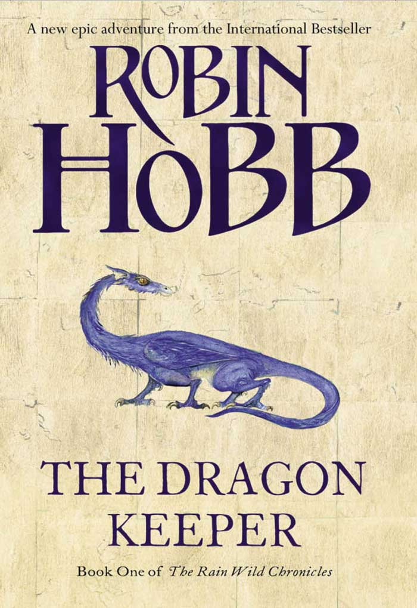
Хранитель драконов
Роман «Хранитель драконов» рассказывает о том, что настало мгновение, когда у нас есть возможность для погружения в мир реки Дождевых чащоб и Живых Кораблей. Ведомые страшным драконом Тинтальей змеи достигли полей впервые за продолжительное время. Лишь части из них удалось выжить, другие же умерли по причине травм, переедания и накопившегося в реке яда.
В книге «Хранитель драконов» писательницы Робин Хобб говорится о том, что Дождевые Чащобы изменяли людей, об этом свидетельствует Тимара. Она должна была быть уничтоженной во время родов, поскольку родилась с когтями черного цвета. Но ее спас отец, а мать так и не смогла простить ее.
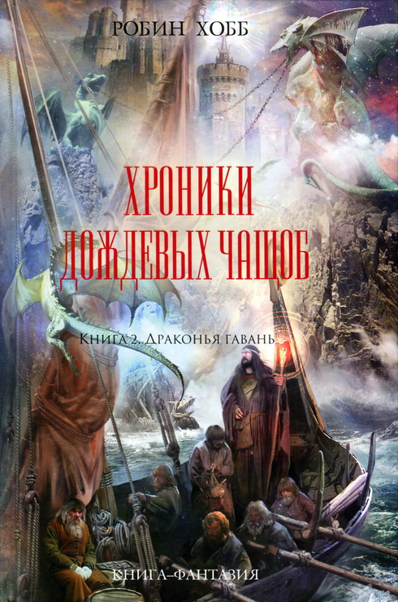
Драконья гавань
Книга «Драконья гавань» – о путешествии пятнадцати драконов в поисках затерянной Драконьей гавани. У них есть сопровождающие – люди, также находящиеся в поисках своего дома. Но точных карт нет, и они, постепенно продвигаясь ближе к своей цели, несколько изменяются… И их дружба подвергается настоящей проверке.

Город драконов
После долгого и сурового путешествия Келсингра наконец оказалась рядом, на другом берегу ядовитой Реки Дождевых чащоб. Но главное испытание для драконов и их хранителей людей еще впереди. Стремительно настигающие их враги, ведомые злобой, жадностью и темными желаниями, стремятся заполучить сокровища, хранящиеся внутри стен волшебного города. И теперь для достижения святилища своих предков драконы должны пробудить в себе способность, утраченную много лет назад: драконы должны научиться летать.
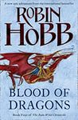
Кровь драконов
В книге «Кровь драконов» рассказывается о легендарной голубой драконице по имени Тинталья, которая была смертельно ранена охотниками, посланными герцогом Чалседа. Смерть Тинтальи грозит гибелью всему миру драконов, ведь вместе с ней будут утрачены ценные знания, необходимые драконам Келсинга для выживания. Чтобы спасти город, сделать возможным дальнейшее сосуществование драконов и людей, хранители погружаются в память города, рискуя своей жизнью и надеясь отыскать магию Элдерлингов…
Рассказы, относящиеся ко Вселенной Элдерлингов
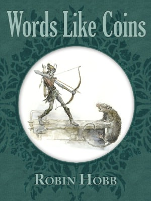
Слова как монеты
Robin Hobb revisits her Farseer world in this 10,000 word tale, “Words Like Coins,” featuring five new illustrations by Tom Kidd.
Mirrifen, a failed hedge-witch's apprentice who has married to find security finds that threatened by a severe drought and the appearance of a pregnant female pecksie.
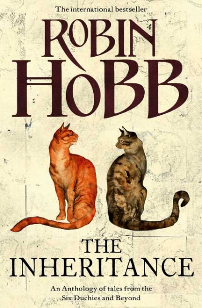
Кошачья добыча
Основной идеей произведения «Кошачья добыча» является то, что любой выбор необходимо делать после тщательного обдумывания, причем руководствоваться прежде всего собственной головой, если не хочешь лишиться ее. Как хорошо иногда бывает иметь кота, который умеет разговаривать, хоть и мысленно, да еще если он единственный способен постоять за своих владельцев!
Сын солдата
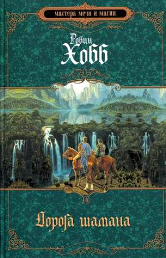
Дорога шамана
Все не так просто в фантазийном мире королевства Герния.Если у отца есть сын, то он будет наследником. Если же у него есть и второй сын, то он должен стать солдатом. Судьбы третьего, четвертого и последующих сыновей так же предопределены. И ничто не должно этому помешать, иначе быть беде.
Отец Невара Бурвиля, так же как и он, был вторым сыном, но за военные заслуги получил от короля титул и владения. И потому в Королевскую Академию Кавеллы Невара отправляется новоиспеченным дворянином. Однако нелегко ему приходится среди отпрысков старинных родов. К тому же он оказывается в самом центре войны между королевскими войсками и обладающим магией лесным народом Спек с территории Предельных гор.
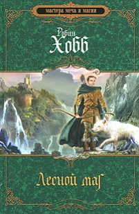
Лесной Маг
Эпидемия чумы скосила многих молодых людей, обучающихся в Королевскую Академию Кавеллы. Оставшиеся в живых кадеты, возможно, никогда не смогут стать офицерами. Переболел опасной болезнью и главный герой Невара Бурвиль.
Однако его выздоровление проходит иначе, чем у других несчастных. Несмотря на диету, он сильно поправляется. И это не нравится его невесте и отцу. Только чума, распространившаяся в родном поместье, позволяет Неваре еще некоторое время побыть дома. Но вскоре по воле отца, не желающего видеть сына, он вынужден покинуть дом и отправиться служить в армии.
И теперь главная цель Невары – остановить разрушительную войну между королевством Герния, вольными кочевниками равнин и лесным народом Спек.
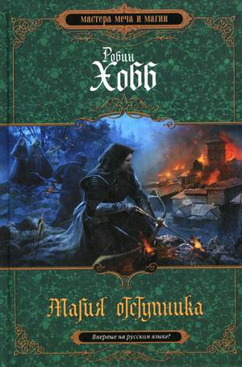
Магия отступника
«Магия отступника» – это заключительный роман трилогии, главным героем которой является Невар Бурвиль. Он оказался в центре борьбы трех сил: железа, равнин и леса. В результате он решил уйти в лес. Но его главная проблема заключается в том, что его душа поделена на две половины. Одна является орудием в руках темных сил, а другая предана силам магии. Невару нужно соединить эти две половины в единое целое, чтобы предотвратить катастрофу.